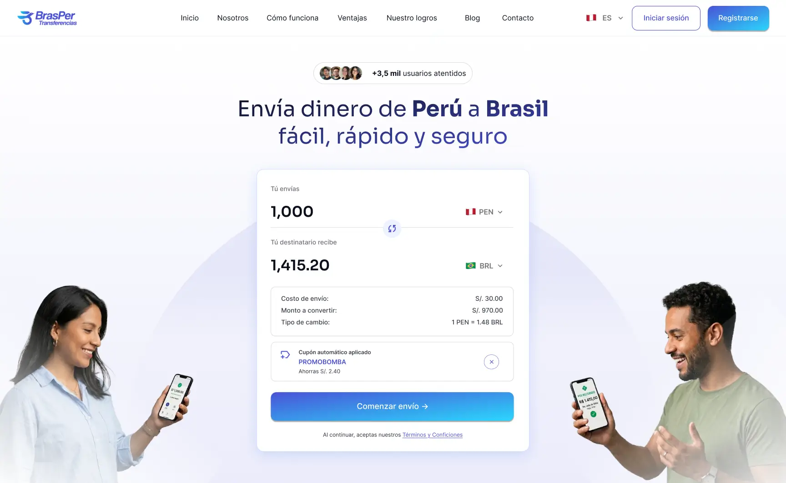
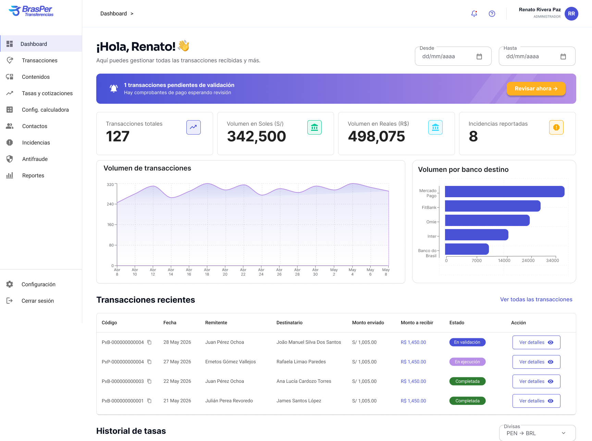

03 — La solución
Dos plataformas en una: la experiencia del usuario y el control total del negocio.
Diseñé la plataforma en dos grandes módulos. El primero es el flujo público: landing con calculadora en tiempo real, registro, inicio de transacción, carga de comprobante y seguimiento hasta el destino. El segundo es el panel administrativo, donde el equipo solo interviene en la validación final — todo lo demás lo gestiona el sistema.
01
Landing + calculadora en tiempo real
Calculadora de cotización configurable desde el admin. El usuario ve exactamente cuánto recibirá antes de iniciar la transacción.
02
Flujo de transacción guiado
Registro, datos del destinatario, carga del comprobante y confirmación — todo en un flujo paso a paso sin fricción.
03
Trazabilidad en tiempo real
El usuario ve el estado en cada etapa: pendiente, en validación, en proceso y completada — sin contactar al equipo.
04
Panel admin completo
Transacciones, validación, antifraude, incidencias, leads, tasas y edición de contenido de la landing desde un solo lugar.

Landing page con calculadora de cotización configurable desde el panel admin

Flujo paso a paso con carga de comprobante

Panel admin con gestión de transacciones y antifraude